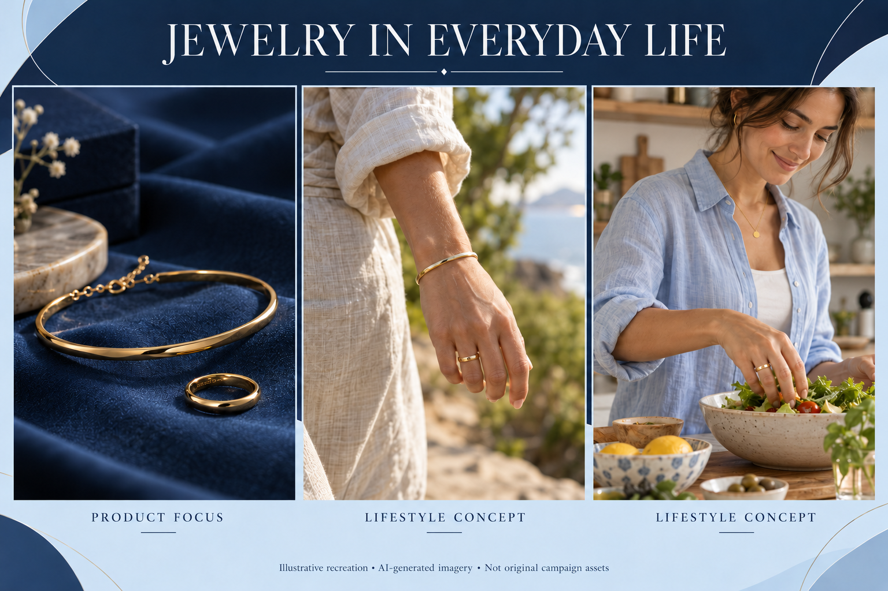

Using Trial Reels to shortlist creative for paid advertising
A one-month creative testing strategy using Trial Reels to screen content before paid promotion.

The challenge
Some reels received too little spend within the same ad set to assess their performance. Giving each reel a separate budget risked inefficient spending. The task was to shortlist creative for paid testing before committing ad budget.
My role
As the Account Manager at Concentrix under direct Meta supervision, I designed the creative testing approach, led performance analysis and developed the creative concepts. I led weekly reviews with the client to turn results into content and budget recommendations. The client’s creative team handled production, publishing and implementation.
Data-driven decisions
- Screen before spending: I introduced Instagram Trial Reels, which the team had not been using. I recommended five reels from around twenty candidates for paid testing, using the scoring approach below.
- Make the creative relatable: I recommended showing people wearing the jewelry in everyday settings, such as walking outdoors or preparing food, alongside polished product footage.
- Review weekly: I reviewed performance with the team each week throughout the one-month test, while the total ad budget remained unchanged.
How the scores guided budget allocation
I developed a scoring approach for the Trial Reels using four metrics, in order of priority:
- Average watch time.
- Number of views.
- Number of saves.
- Number of shares.
I combined each reel’s scores to rank the creative and guide my budget recommendations. Higher-scoring reels received a larger share of the paid testing budget, while the total ad budget remained unchanged.
Results
| Metric | Result |
|---|---|
| Advertising budget | Unchanged |
| Creative shortlist for paid testing | 5 reels from approximately 20 candidates |
| Website return on ad spend (ROAS) | 5× → 6.3× |
| Total ad engagement | +80% |
The client adopted the workflow and reported increased store visits.